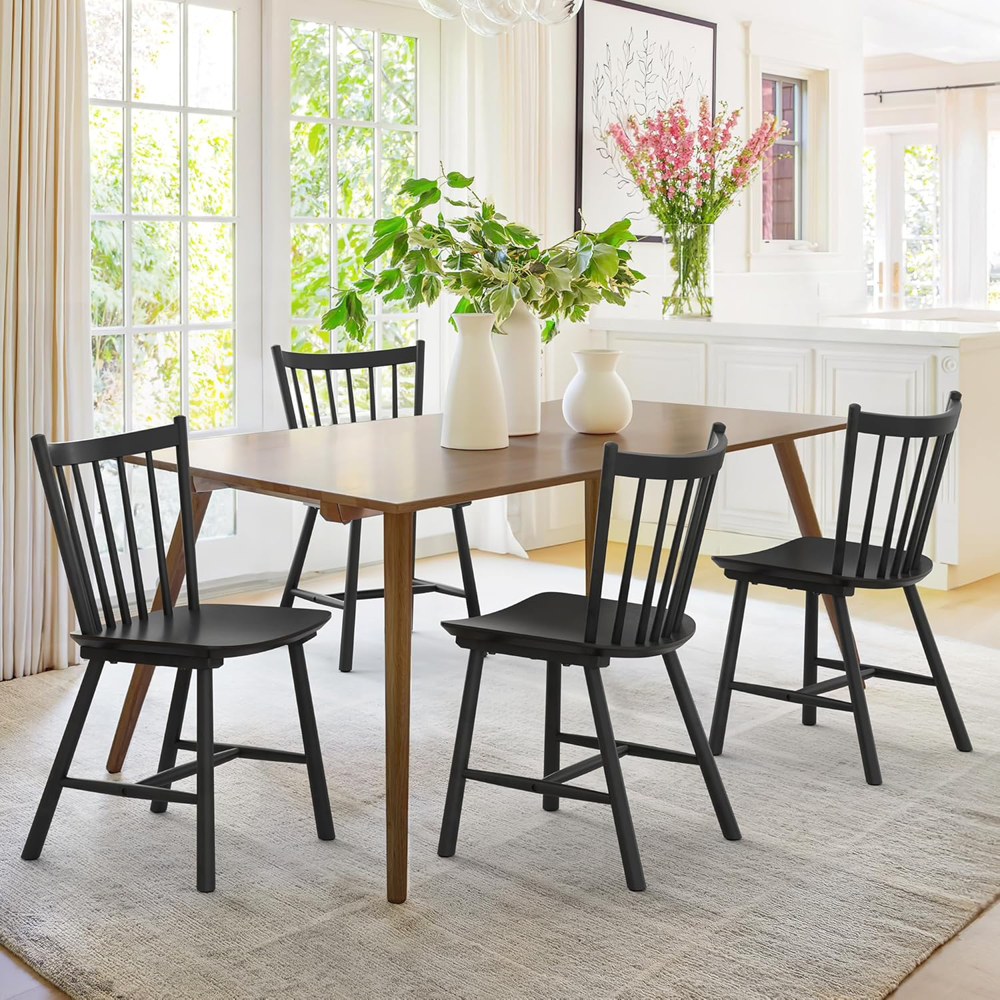
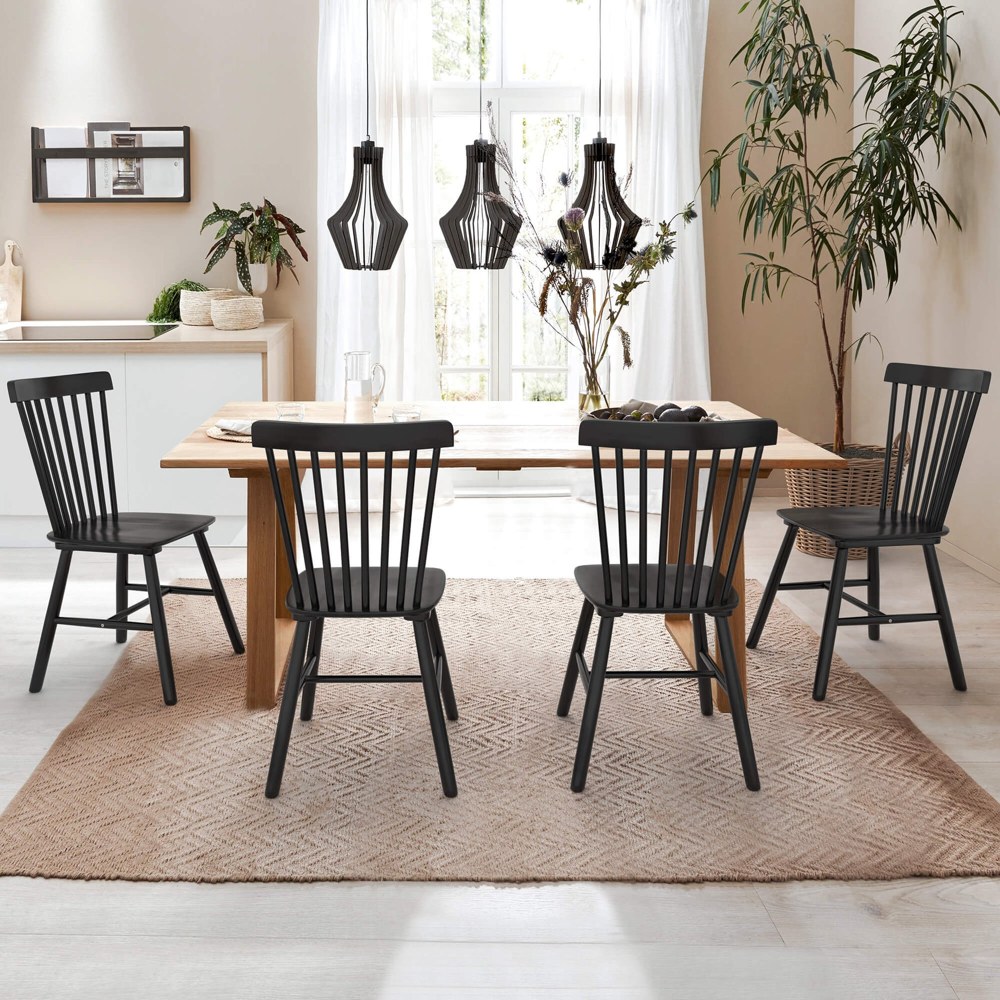

Product 01Dining Chair
Black Windsor / Spindle Back Dining Chair
Likely product family: black Windsor-style spindle dining chairs, similar to Azure Black Rubberwood or STARY Windsor dining chair sets.
- Visual cues
- Curved top rail, vertical spindle back, black painted wood frame, stretcher-supported legs.
- Material
- Likely rubberwood or solid wood with black finish.
- Use case
- Kitchen, dining room, farmhouse, or mid-century inspired interiors.
- Note
- The original images do not show a brand or SKU, so references are nearest market matches.